1 water project
funded yesterday
funded yesterday
12,320 lives
impacted this year
impacted this year
 See where your
See where yourdonation goes
Join a global movement of data‑driven changemakers bringing clean water to millions. See the impact. Make a difference.
Support Sustainable Water Solutions
See where your